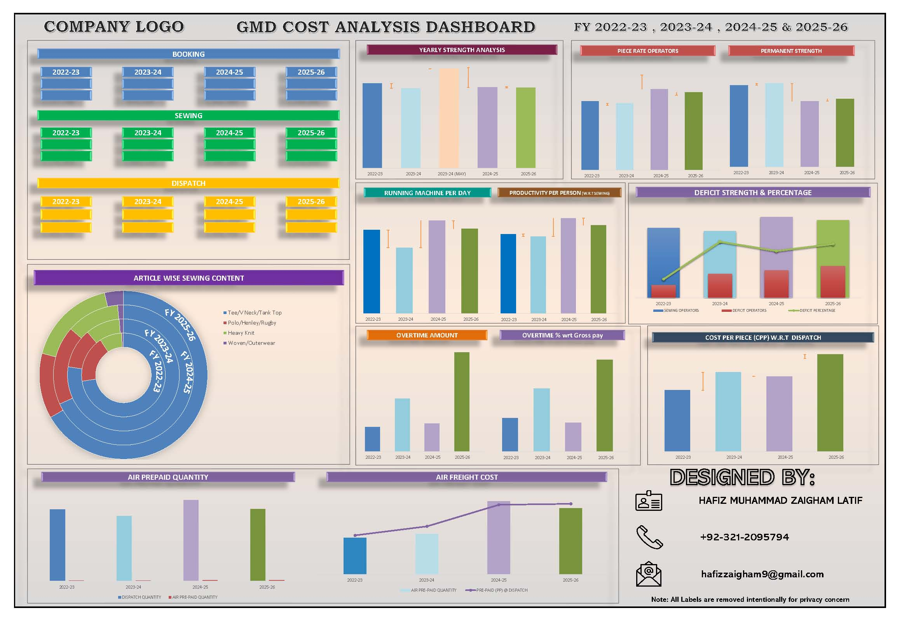

Engineering Efficiency through Data Intelligence & Automation.
Results-driven Industrial Engineering and Data Analytics professional with 6+ years of experience at Combined Fabrics Limited and Firhaj Footwear. Expert in Power BI, Power Query, SAM validation, cut-to-pack costing, RFID & ERP integration, operation breakdowns, and automated rate/wage structures.

Core Pillars
Bridging heavy manufacturing discipline with cutting-edge IT solution architecture.
Business Intelligence & Analytics
Converting "Big Data" into "Smart Decisions"
Eliminating management blind spots with interactive Power BI dashboards, automated SQL data pipelines, DAX calculations, and executive KPI tracking.
- Power BI
- DAX Engine
- Power Query
- ERP Integration
Low-Code Digital Automation
Modernizing the Factory Floor
Building custom canvas and model-driven Power Apps that digitize physical forms, automate voucher validation, and streamline wage processing with zero manual lag.
- Power Apps
- Power Automate
- Power Pages
- Voucher Automation
Industrial Cost Engineering
Financial Precision in Apparel
Preparing cut-to-pack actual & tentative costing for buyer submissions, validating SAM, and designing skill-tiered rate structures that incentivize workers while protecting CPP margins.
- SAM Validation
- Cut-to-Pack Costing
- CPP Analysis
- Skill Rate Lists
Process Optimization & IE
Maximizing Workflow Velocity
Calibrating INA Hanger Systems, conducting Work Studies, developing Operation Bulletins (OBs), examining labor ratios, and executing executive risk analysis meetings.
- Work Study
- INA Hanger Lines
- OB Development
- Overtime & Labor Ratio
Professional Experience
6+ years of proven track record across leading textile & footwear manufacturing operations in Pakistan.
Combined Fabrics Limited
- Prepared and analyzed cut-to-pack actual and tentative costing for buyer submissions and strategic pricing.
- Architected and mapped comprehensive company-wide Organizational Structures (Organograms) and Reporting Hierarchies using MS Visio, defining reporting channels and manpower requirements across Rate/SAM Costing, Pre-Production, Sewing, Finishing, Packing, and IE Audit departments.
- Authored, reviewed, and standardized Standard Operating Procedures (SOPs) for operational processes and Job Descriptions (JDs) for technical designations across departments.
- Developed company portfolio presentations for new buyers and business development initiatives.
- Monitored and analyzed overtime trends and direct vs. indirect labor ratios to optimize manpower allocation.
- Calculated and monitored Cost per Product (CPP) to improve budget control and operational efficiency.
- Conducted SAM validations and administered updated rate lists and SAM sheets for accurate floor management.
- Assigned operation rates based on skill-level assessments, standardizing operation names, rates, and remarks to reduce voucher discrepancies to zero.
- Prepared, validated, and analyzed vouchers and cost-per-piece reports across all operational units.
- Led weekly and monthly risk analysis meetings, developing Power BI dashboards to support strategic executive decision-making.
- Delivered analytical PowerPoint presentations to senior management covering production trends and bottlenecks.
- Implemented and calibrated new INA Hanger Line structures, improving workflow efficiency and garment throughput.
- Created standardized Excel-based reports and collaborated with ERP teams to develop and refine operational reports.
- Established and monitored KPI frameworks for production and services departments.
- Conducted cost analysis for cut-to-pack and services operations.
- Managed INA Hanger System operations, maximizing daily production output and minimizing line downtime.
- Verified barcode scans and processed operator payments accurately.
Firhaj Footwear
- Developed Operational Bulletins (OBs) for current and upcoming footwear styles.
- Conducted cost-per-minute analysis to improve production efficiency and line balance.
- Verified SAM calculations, aligning workforce capacity with daily production targets.
- Analyzed production reports to identify operational gaps and implement corrective action plans.
Technical Toolkit
Multi-disciplinary technical arsenal across analytics, low-code platforms, and industrial methods.
Data Analysis & Visualization
Power Platform & Tools
Industrial Engineering Methods
Leadership & Governance
Projects & Initiatives
High-impact engineering initiatives designed and delivered across factory operations.
Real-Time Hanger Line Performance Dashboard
Problem: Delayed 24-hour paper reporting caused undetected hanger line bottlenecks and operator idle time.
Action: Developed a web-based Power BI dashboard integrated with INA Hanger Systems and ERP data to stream real-time output metrics.
Workforce Coding & Reporting Framework
Problem: Fragmented reporting formats created inconsistencies in operation names, rates, and voucher logging.
Action: Standardized workforce reporting formats and established a unified coding system to eliminate voucher discrepancies.
Skill-Based Rate & Wage Validation Engine
Problem: Unaligned piece-rate pay scales caused worker friction and required excessive manual payment audits.
Action: Introduced skill-level-based rate structures and automated voucher validation to promote fairness and boost operator output.
Attendance & Punctuality Incentive Model
Problem: Absenteeism and tardiness directly impacted daily line balancing and target garment output.
Action: Designed and implemented punctuality and attendance-based allowance systems, significantly improving shop floor discipline.
Executive Deficit Reduction & Risk Analysis
Problem: Unaddressed operational deficits led to budget overruns and delayed shipment schedules.
Action: Led weekly and monthly executive risk analysis meetings using Power BI data to proactively resolve production gaps.
Visual Portfolio
High-impact previews of industrial costing reports and digital automation flows.

Industrial Costing & SAM Validation Analytics
Comprehensive cut-to-pack cost analysis evaluating machinery, manpower allocation, order booking, sewing operations, dispatch cost-per-piece (CPP), and floor deficit metrics.
Digital Voucher & Wage Process Automation
From manual paper vouchers to 100% automated digital validation flows—eliminating wage audit discrepancies and operational delay.
Education & Growth
Academic foundations, technical credentials, and continuous learning trajectory.
BS in Information Technology
Virtual University — Specializing in Enterprise Data Systems, Software Engineering & IT Infrastructure.
Diploma of Associate Engineering (DAE) — Electrical
Punjab Board of Technical Education & Management — Industrial Systems Control & Hardware Engineering.
Matriculation (Science)
Board of Intermediate & Secondary Education (BISE), Lahore
Hifz-e-Quran
IQRA School — Cultivating exceptional memory, focus, discipline, and uncompromising personal integrity.
Key Certifications
Microsoft Power Platform Developer
Power BI, Power Apps, Power Automate & Power Pages
Advanced Excel Mastery
Macros, VBA & Advanced Data Analysis
Zero to Hero in Microsoft Excel
Data Extraction & Financial Modeling
Adobe Premiere Pro CC
Professional Video Operations & Presentation
Adobe Lightroom
Digital Media Visualization & Media Design
Cisco Networking Labs
Practical Packet Tracer Configuration & Subnetting